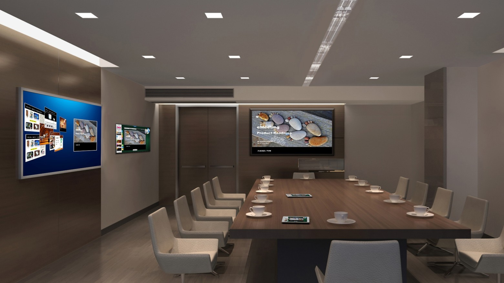

Vous trouverez sur ce site des informations sur le DUT Informatique.
Notamment, la page de présentation du DUT Informatique vous renseignera sur le programme pédagogique national.
La carte de France des DUT Informatique vous permettra de trouver un DUT proche de votre entreprise et de prendre contact pour proposer des offres de stage ou d'apprentissage.
Vous pouvez aussi nous faire passer des offres d'emplois à l'adresse suivante ; elles pourront être redirigées à l'ensemble de nos étudiants (actuels et anciens) en France : webmaster@iut-informatique.fr.
